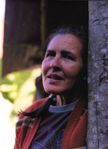

Nació en la Mesa de Esnujaque en el Estado Trujillo el 1 de Noviembre de 1935, en Venezuela.
En Boconó desarrolló su actividad de escultora. Talla imágenes sagradas entre otros tipos de figuras e imparte su técnica a niños y adultos. Sus tallas expresan un estilo barroco popular donde se mezclan colores policromados, pedrerías, espejos y una excelente técnica para lograr transmitir esplendor a sus visiones místicas. En Isnotú ha organizado un museo donde conserva sus piezas más apreciadas. Además, es conocida por otras actividades como son la organización de eventos festivos y teatrales de la tradición local, su habilidad para preparar a los difuntos y dirigir los rezos que se acostumbran en tales ocasiones y por sus facultades premonitorias.
(Fuente: Archivos FUNDEF y Revista Bigott, Número 19, año 10, 1991, Caracas).